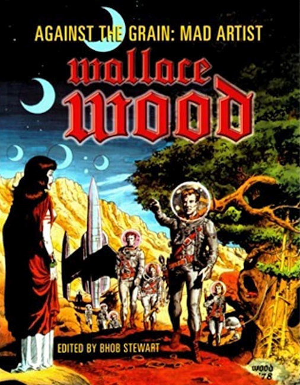
×
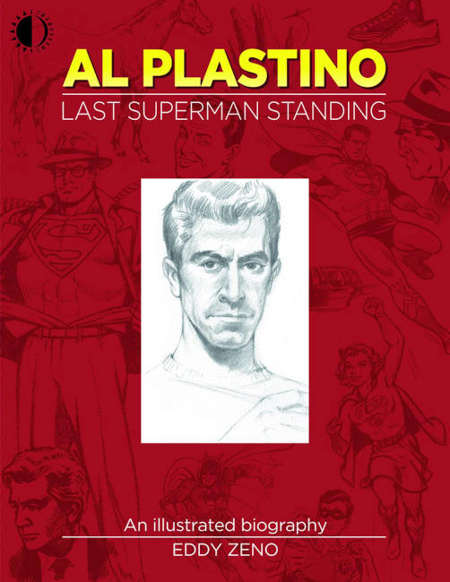
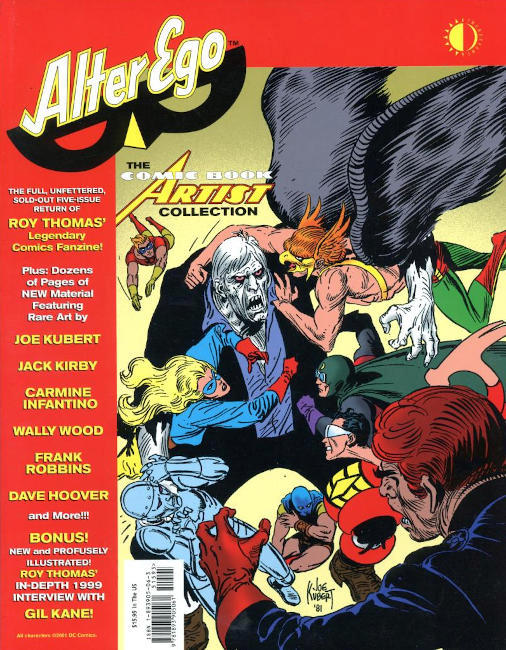
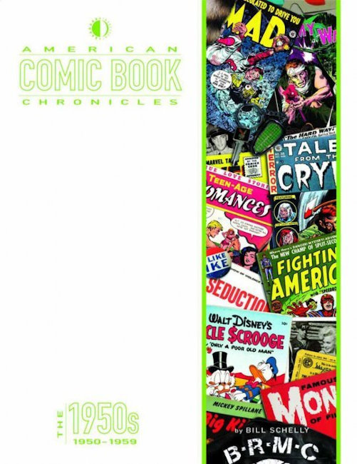
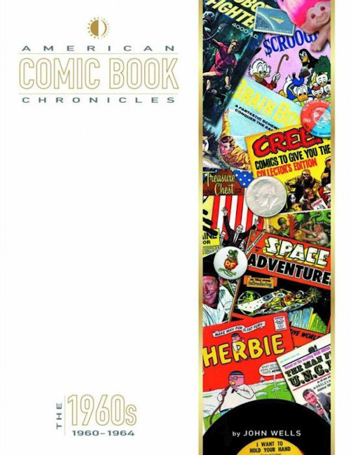
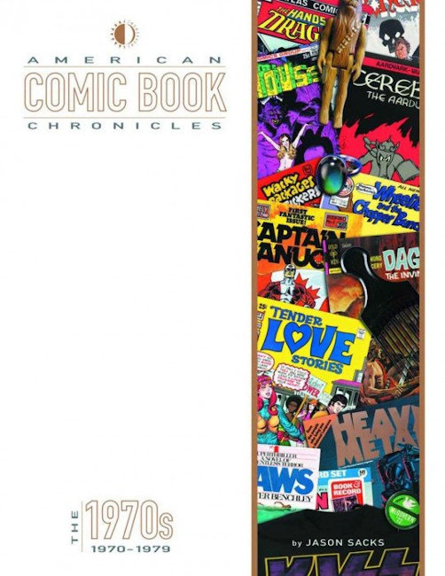
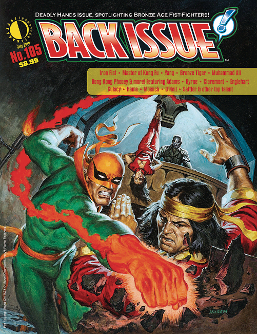
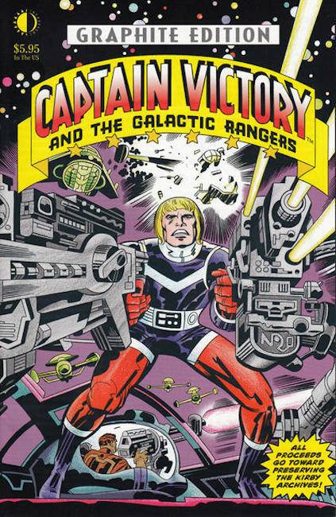
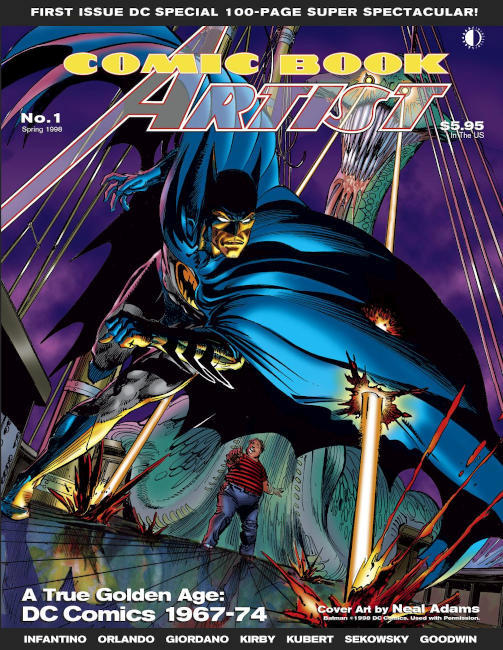
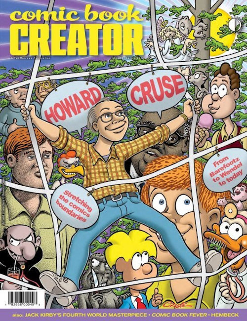
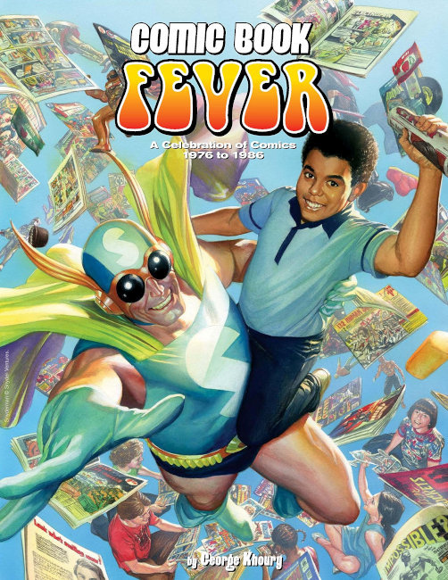
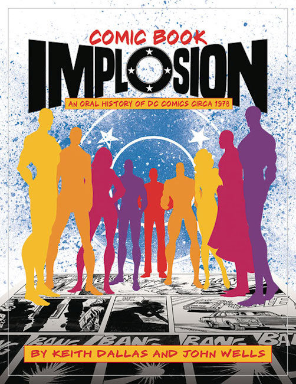
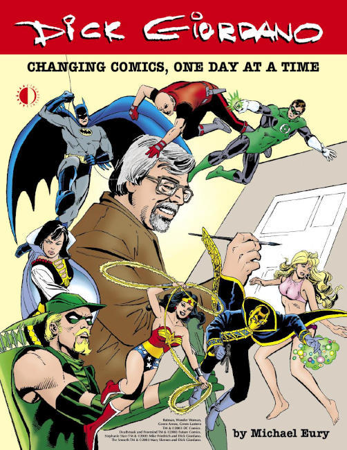
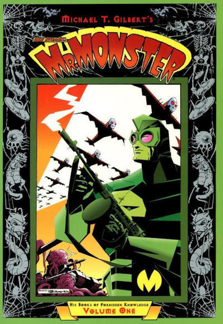
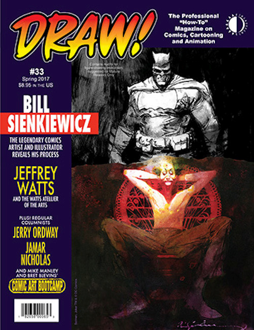
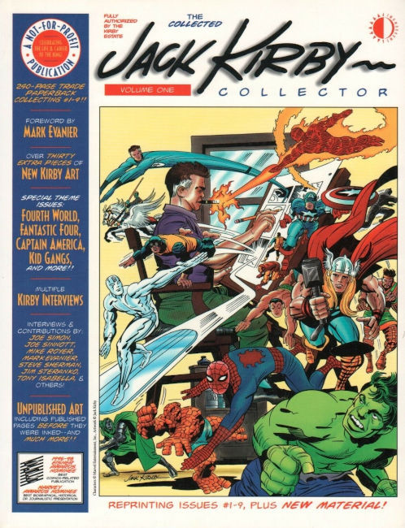
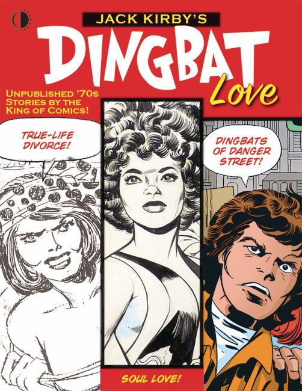
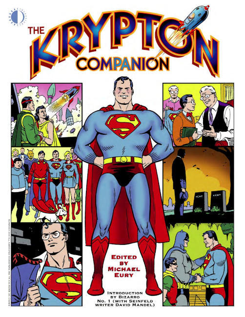
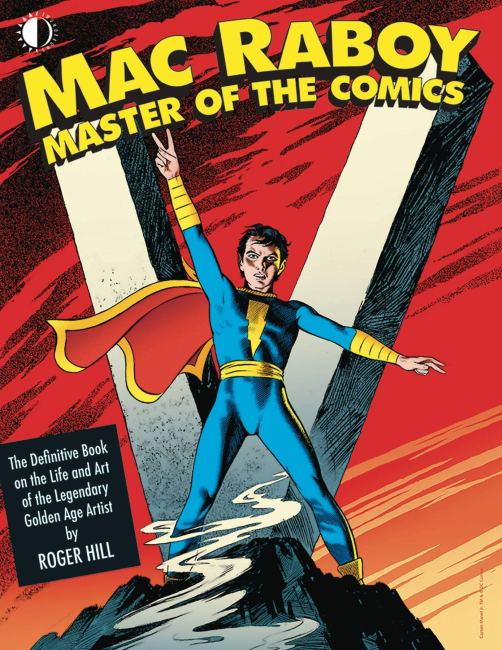
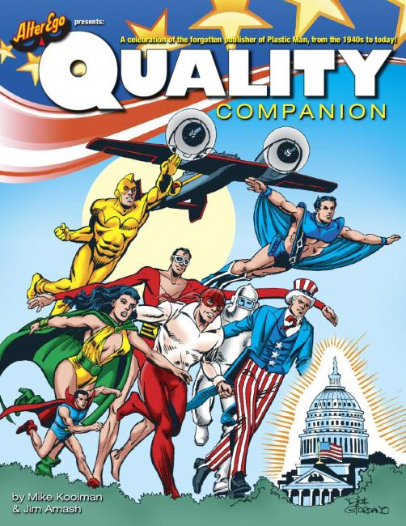
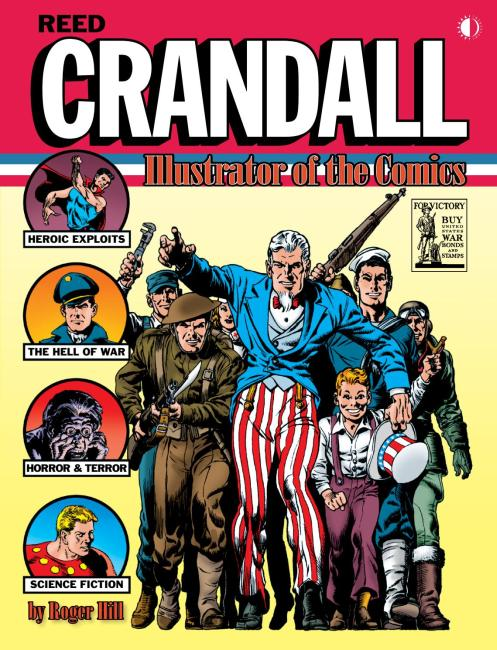
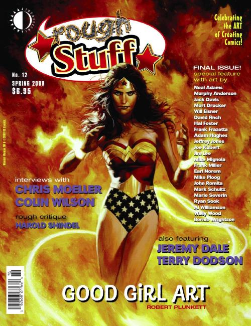
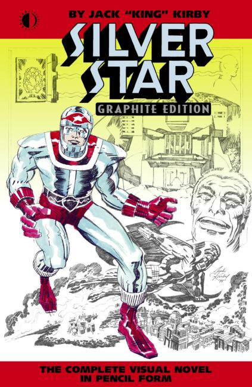
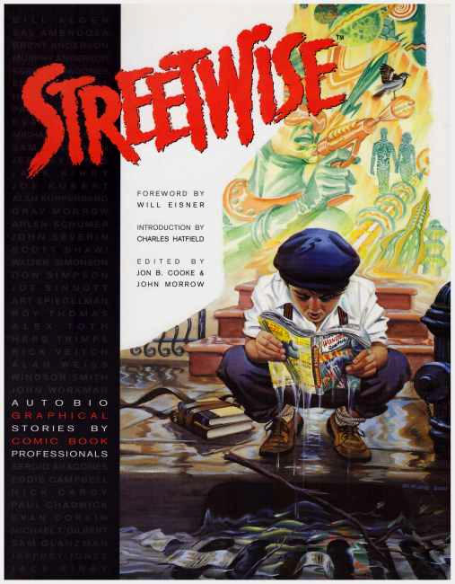
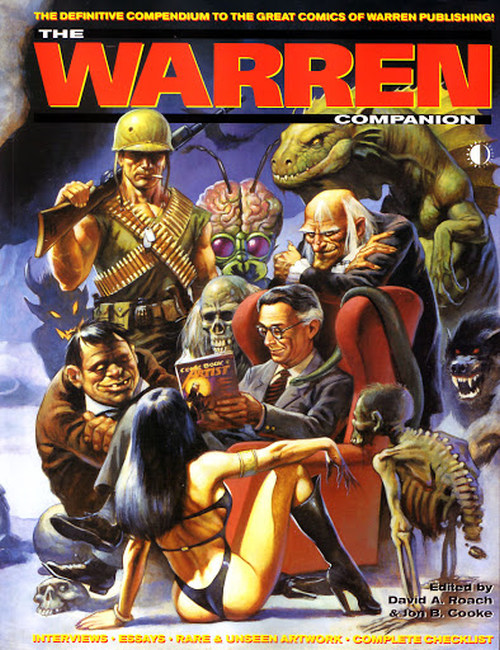
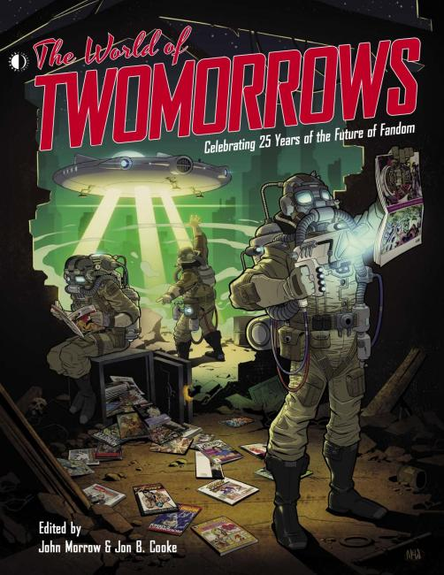
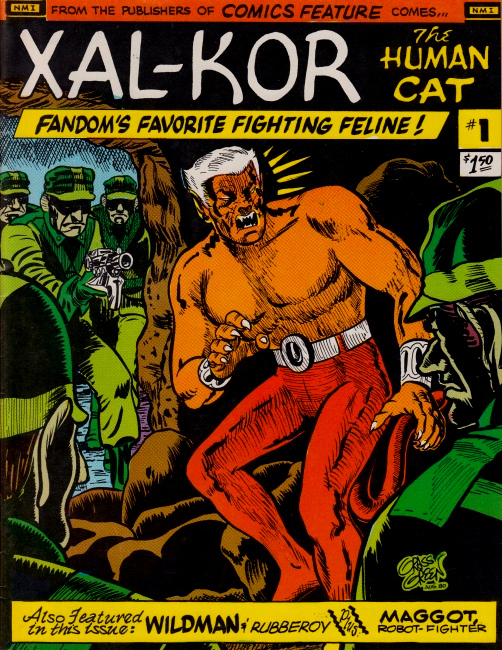
❮
❯
TwoMorrows Publishing is a publisher of magazines about comic books, founded in 1994 by John and Pam Morrow out of their small advertising agency in Raleigh, North Carolina. Its products also include books and DVDs. It started after the death of comics creator Jack Kirby, lifelong Kirby fan John Morrow and his wife Pam contacted Roz Kirby, the artist's widow, about an ongoing magazine devoted to her husband's work and legacy. She gave it her authorization and it became The Jack Kirby collector magazine.
Titles
Against The Grain: Mad Artist Wallace Wood (2003)
Al Plastino: Last Superman Standing (2016)
Alter Ego (1999)
American Comic Book Chronicles: 1950-59 (2013)
American Comic Book Chronicles: 1965-69 (2014)
American Comic Book Chronicles: 1970-1979 (2014)
Back Issue! (2003)
Captain Victory: Graphite Edition (2003)
Comic Book Artist (1998)
Comic Book Creator (2013)
Comic Book Fever: A Celebration of Comics: 1976-1986 (2016)
Comic Book Implosion: An Oral History of DC Comics Circa 1978 (2018)
Dick Giordano: Changing Comics, One Day at a Time (2003)
Doc Stearn... Mr. Monster His Books of Forbidden Knowledge (2001)
Draw! (2001)
The Jack Kirby Collector (1994)
Jack Kirby's Dingbat Love (2020)
Krypton Companion (2006)
Mac Raboy: Master of the Comics (2019)
Quality Companion (2011)
Reed Crandall: Illustrator of the Comics (2017)
Rough Stuff (2006)
Silver Star: Graphite Edition (2006)
Streetwise (2000)
Warren Companion (2001)
World Of TwoMorrows (2020)
Xal-Kor The Human Cat (2002)

{kind=link}
{kind=link}
{kind=link}
{kind=link}
{kind=link}
{kind=link}
{kind=link}
{kind=link}
{kind=link}
{kind=link}
{kind=link}
{kind=link}
{kind=link}
{kind=link}
{kind=link}
{kind=link}
{kind=link}
{kind=link}
{kind=link}
{kind=link}
{kind=link}
{kind=link}
{kind=link}
{kind=link}
{kind=link}
{kind=link}
{kind=link}